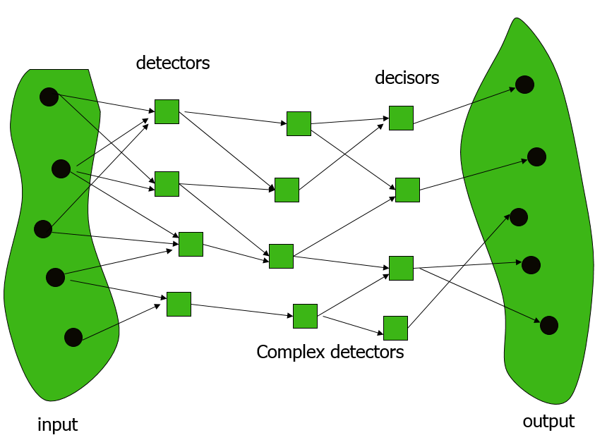

JavaScript and Artificial Intelligence
The Next Frontier
Created by @ajlopez
https://github.com/ajlopez/Talks/JavaScriptAI
https://github.com/ajlopez/JavaScriptAI
Using reveal.js
Agenda
- Artificial Intelligence
- Genetic Algorithms
- Neural Networks
- Evolutionary Programs
- Critique
Artificial Intelligence
Decades of AI
- The Study and Design of Intelligent Agents
- Reasoning
- Knowledge
- Planning
- Natural Language
- Learning
Tools
- Logic Programming
- Knowledge Representation
- Expert Systems
- Neural Networks
- Genetic Algorithms
- ...
Board Games
War Games
Tree Search

Backgammon
Genetic Algorithms
Generic Structure
Neural Networks
Artificial Neuron

Many Layers
Evolutionary Programs
The Next Frontier
Intelligent Agent
NodeBots
http://nodebots.io/